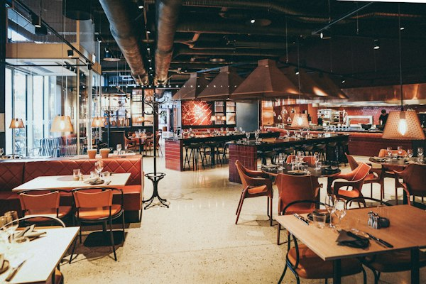
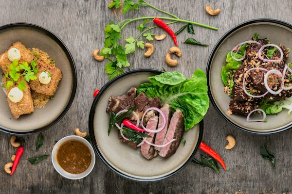

Menus as text, not pictures
A PDF or a photograph of a menu cannot be read by search engines, by screen readers, or by a hungry person on a bus. We rebuild menus as proper web pages.
Six o'clock on a Friday. Four people on a bus are arguing about dinner. One of them finds your website, taps the menu link, and a PDF opens sideways at roughly four point type. She pinches, scrolls, gives up, and opens the place down the road whose menu is simply a page she can read. The table goes there instead, and nothing on your site ever recorded that it happened.
Onva Labs rebuilds hospitality and retail sites around what customers actually do: read the menu, check tonight's hours, book a table, order for pickup, or work out whether the size they want is on the shelf. Menus become real text that search engines can read. Prices display GST inclusive. Bookings and orders land in the systems your floor staff already watch.
Six things hospitality and retail sites commonly get wrong, starting with the menu, and what changes when each one is treated as part of the build.
A PDF or a photograph of a menu cannot be read by search engines, by screen readers, or by a hungry person on a bus. We rebuild menus as proper web pages.

Your booking provider wired into the site so a reservation takes a few taps, with sittings, covers and special dates reflected without staff fielding calls mid-service.

Pickup and delivery ordering built into the site, with items, modifiers and pickup windows kept in step with what the kitchen can genuinely produce at that hour.

Dietary and allergen notes attached to the dish rather than buried in a footnote, so your floor staff stop answering the same question at every second table.

Product pages carrying stock, variants and GST-inclusive pricing, structured so shoppers can filter sensibly and so search engines understand what each page actually sells.

Trading hours, address and holiday changes kept consistent between the site and your Google Business Profile, with schema.org structured data describing the venue itself.
Nearly every hospitality decision happens on a phone, usually in a hurry, so menus, hours, bookings and ordering are designed for a small screen first and a desktop second.
Speed sits in the brief: LCP under 2.5 seconds, INP under 200 milliseconds and CLS under 0.1, because a menu that stalls loses the table before it has finished loading.
Checkout is set up the way Australian shoppers expect, with GST-inclusive pricing displayed, PayID, BPAY, Afterpay and Zip where you want them, and Australia Post, Sendle or Shippit for delivery.
Local SEO for hospitality is part of the build, not a later add-on, keeping hours, location and public holiday trading consistent across your site and your Google Business Profile.
We order from your current site ourselves and note every point where a customer would quit.
Menu structure, booking flow, catalogue and trading hours planned before a single page is designed.
Pages built and checked on real phones, including a genuine test order from start to receipt.
After launch we watch orders, bookings and search terms, then adjust whatever is still losing people.
Three services hospitality and retail clients typically add once the menu, bookings and ordering are behaving themselves.
E-commerce development for small businesses selling Australia-wide, with payments, stock and shipping set up so orders stop needing manual handling.
View service
Search work for venues and shops, covering local visibility, content structure and the technical foundations search engines and AI tools read.
View service
Posting and campaigns for venues where specials, seasonal menus and new stock need to reach people who already follow you.
View serviceBecause a PDF behaves like a picture for most of the people who need it. Search engines struggle to read the dishes inside one, screen readers frequently cannot, and on a phone it opens tiny and sideways. Rebuilt as web pages, your dishes become text that can be found, read aloud, and changed by a staff member in a minute.
Yes. Click-and-collect is usually simpler to run than delivery and keeps the margin inside the venue. We set pickup windows, tie items to what the kitchen can produce at that hour, and route the order to a screen or printer staff will actually see. Delivery can run beside it, or be added later.
Prices shown GST inclusive, so the figure on the product page is the figure at checkout. Payment options Australian shoppers look for, including PayID, BPAY, Afterpay and Zip. Shipping rates and labels through Australia Post, Sendle or Shippit, with tracking sent to the customer automatically rather than copied across by hand.
If your menu is a PDF, that is the first fix. Tell us about your venue or shop and we will show you what else is quietly costing you customers.